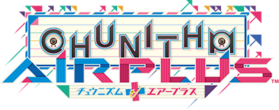
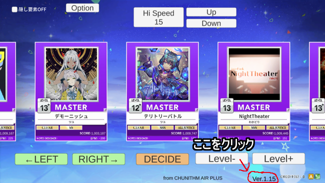

自作ゲーム置き場
↓ ↓ ↓
チュウニズムもどきの遊び方 AIR PLUS.ver
もしゲームを始めようとしたときにロードが終わって
エラーが出たら、ブラウザのキャッシュを消去してください。
やり方はググってください。
選曲画面はたぶんわかるでしょう。
マウスでクリックしてください。
AIR PLUSからキーボード矢印とスペースでも操作できます。
上の「Hispeed」でノーツの流れてくる速度を変えられます。曲の速度は変わりません。
無制限に変えられますが極端な値にすると早すぎたり、
そもそもノーツが降ってこなかったりします。
選曲画面には種類があり、
CHUNITHM
CHUNITHM AIR PLUS
CHUNITHM STAR
CHUNITHM AMAZON
CHUNITHM CRYSTAL
CHUNITHM PARADISE
CHUNITHM NEW
CHUNITHM SUN
Beatmania IIDX 12 HAPPYSKY
Beatmania IIDX 22 PENDUAL
Beatmania IIDX 31 EPOLIS
が存在します。
特定の曲をプレイすると移動(NEWとSUN以外)しますが、
移動したくない場合は上の隠し要素OFFを押してください。
隠し要素OFFを押すことで、選曲、プレイ、リザルト画面が現在のバージョンになります。
しかし、各楽曲固有の演出等が出なくなります。
また、隠し楽曲二曲を無条件でプレイできるようになります。
一部の曲はBMS譜面形式を採用しており、
曲のBPMによって同じHispeedでもスピードが変化します。
↑自動的に同じスピードに調整するようにしました。
また、曲の途中でBPMに連動してスピードが変化する曲もあります。
（↑の曲は最高BPMのスピードに調整しています）
曲の途中でキーボードの↑↓キーを押すと
Hispeedをそれぞれ0.5ずつ変えることができます。
また、←キーを押しながら↑↓どちらかを押すことで
Hispeedをそれぞれ1.0ごとに変えることができ、
→キーを押すと選曲した時点でのHispeedに戻ります。
曲はキーボードを使って演奏します。音ゲーの遊び方について一応書いておくと、
ノーツが黄色い判定ラインに重なったタイミングで対応するキーを押してください。
左からキーボードの「D,F J,K」に対応しています。
赤いノーツはキーを押す、青いノーツはロングノーツで終点まで押しっぱなしにします。
ロングノーツはAIRから追加されました。
また、タッチ操作（マウスクリック）にも対応しています。
※音が出るので最大音量で楽しみましょう。
初心者をまったく考慮していない難易度設定と、多分みんな知らない曲を収録しています。最初のロードにくっそ時間がかかります。
動作はうーんって感じでしたが、だいぶ改善されました。
最初は判定やムービーと曲がずれてましたが、今はピッタリ合うように改善されました。
なので、判定がプロセカ並み（±50ms）だったのですが、
高精度タイマーを使うようにしたので、
本家チュウニズムと同じ判定(±32ms)になりました。ごめんなさい。（？）
しかし、相変わらず早MISSが出ない仕様のため連打してるだけで曲自体はクリアできます。
なんか動作がおかしそうだったら
ブラウザのリロードボタンを押して再ロードしてみてください。
直るかもしれません。
効果音は遅延が発生するため入れてません。
設定で入れることは出来ますがおすすめはしません。
スコアの計算方法やクリアゲージの計算方法などは
すべて本家チュウニズム（PARADISE LOSTまで）と同じ方法で計算しています。
なぜかはわかりませんが本家のレーティング計算システムを導入しています。
本家よりちょうど四倍上がりやすく下がりやすいです。
本家チュウニズムと同じ素材を使ってますが、
解析ROMとかではなく、youtubeに上がっている動画から取り出しました。
まあ、でも多分アウトだけど...（汗）
AIR PLUSより、内部的に大型アップデート並みに改修されています。
その中でも、これまで自己ベストはレート計算のために
内部に保存されていましたが、表示する機能を追加しました。
わかりやすくなりました。
また、セーブデータの保存方式を各端末内での保存から、
クラウドでの保存に変更しました。
これにより、少なくともセーブデータ本体が消滅する
ということは起こらなくなりました。
もし、セーブデータがあるはずなのに新規登録の画面が出るなどの不具合が発生した場合は
作者に連絡してください。
ちなみに、Chromeの場合F12を押してデバッグ情報を表示すると、
コンソールに色々情報が流れてます。
内部処理の詳細や、譜面定数、レーティングベスト平均、
リーセント平均、その曲のレート等。
有効活用してみてください。
細かい演出部分に気付くことができたら、私と一緒にチュウニズムをしましょう。
チュウニズムへの愛が感じられたら
それだけでこのゲームのすべてを理解したと言えるでしょう。
このゲームは今回のために作りましたが、30時間は最低でもかかっています。
よかったらたくさん遊んでやってください。泣きます。
判定難もありUnityで音ゲーを二度と作りたくありません。
ちなみに製作者はCHUNITHM CRYSTALから始め、現在虹レートです。
みんなもチュウニズム をしましょう。（義務）
偉大なチュウニズム製作スタッフ達へ
敬礼(｀･ω･´)ゞ
実は最近までビートマニア だけをしまくってたのは内緒。
各楽曲固有の演出についてまとめました。
希望
エンドマークに
選曲画面が無印（初代）になります。
その群青が愛しかったようだった↓
選曲画面がAIRになります。
また、ランクSSSでクリアするとSCREAM SQUADが出現。
それをランクAAA以上でクリアするとハードゲージ冥が出現。
それをクリアするとエンディングが見れ、選曲画面がHAPPYSKYになります。
星色夜空↓
選曲画面がSTARになります。
愛して愛して愛して↓
選曲画面がPENDUALになります。
また固有の演出が楽曲中にあります。
るるちゃんの自殺配信↓
選曲画面がPENDUALになります。
また、曲終了後にムービーを見れます。
Oshama Scramble!↓
選曲画面がCRYSTALになります。
Paracelestia↓
選曲画面がEPOLISになります。
テリトリーバトル↓
選曲画面がPARADISEになります。
folern↓
選曲画面がAMAZONになります。
とこんな風にまとめましたが、実はコマンドを入力すると好きな選曲画面に行けます。
というわけで一般公開コマンド一覧です
「chunithm」 →無印チュウニズムの選曲画面に移動
「air」 →チュウニズムAIR PLUSの選曲画面に移動
「star」 →チュウニズムSTARの選曲画面に移動
「amazon」 →チュウニズムAMAZONの選曲画面に移動
「crystal」 →チュウニズムCRYSTALの選曲画面に移動
「paradise」 →チュウニズムPARADISEの選曲画面に移動
「new」 →チュウニズムNEWの選曲画面に移動
「sun」 →チュウニズムSUNの選曲画面に移動
「pendual」 →Beatmania IIDX 22 PENDUALの選曲画面に移動
「epolis」 →Beatmania IIDX 31 EPOLISの選曲画面に移動
コマンドの打ち方

選曲画面がAIR PLUSの場合↑の画像のように
バージョンが書いてある数字を一回以上クリックします。
そうすることで入力待機状態になります。
この状態でコマンドを半角小文字で入力したら、ENTERを押してください。

選曲画面がAIR PLUS以外の場合↑の画像のように
バージョン名が書いてある場所を一回以上クリックして、同じように入力してください。
ソフランする曲一覧 ↓
Halcyon
Kafig
Aeventyr
PUPA
Jack-the-Ripper
デモーニッシュ
冥
これらの曲はソフランに気をつけてください。
ソフラン（曲の途中でスピードが変わる）曲は楽曲レーベルの右下にある
BPMに「BPM:～〇〇〇」と書いてあります。
〇〇〇はその曲の中で一番早くなる時のBPMです。
スピードはBPMに書いてある最大BPMに合わせて調整されます。
つまり、スピードが一番早くなる時に合わせて調整されます。
なので、一部だけ速い曲だとずっと遅いスピードになるので気をつけてください。
↓から過去バージョンを遊ぶこともできます。
ブロック崩しの遊び方
は、ゲーム画面に書いておいたので省きます。
全部でステージが10ありますが、
↑ステージ9からの難易度を比較的人道的な難易度に調整しました。
※音は出ますがあまり流してほしくないけど音は出ます。（？）
ついでに二回当てないと壊れないブロックのグラフィックを変えて、何回当たったのかわかりやすくしました。
比較的簡単になったと思いますが、作者はまだクリアしてません。
惜しいとこまでは行けます。下にオリジナル版のリンクも貼っておくので、
新バージョンをクリアしたらオリジナル版にチャレンジしてクリアしてください。
クリア画面を写真にとって作者に送り付けてください。喜びます。
写真に取るときは、pcのキーを押さないようにしてください。
タイトル画面に戻ってしまいます。
「congratulations!」の文字が出たら、
そのままスマホとかで写真を撮ってください。
ちなみに、オリジナル版と新バージョンはクリア画面の文字が少し違います。
これは２年くらい前にゲームを作るという目的で作ったものです。
上の音ゲーよりかはだいぶまとも?に動きます。
めちゃくちゃ難しいので誰かクリアしてください。（自分もクリアしたことない）
上二つのゲームはUnityを使って作られていますが、オフラインのファイルから
動作させることができないためサーバーにアップロードしたリンクを貼っています。
サーバーにアップロードしたファイルはgamesフォルダーにあります。
Unityのプロジェクトファイルもgamesの中のUnityに入れておきます。